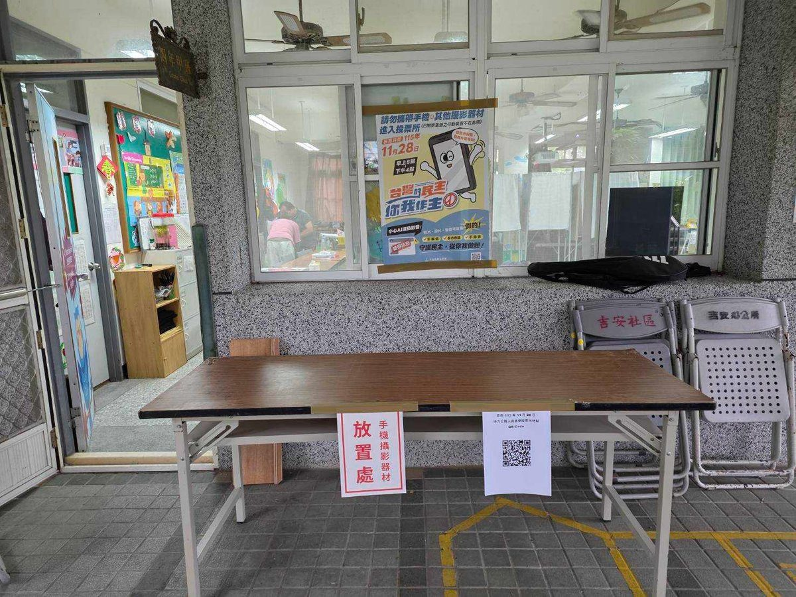

吉安鄉設76處投開票所迎九合一 核電公投併行籲辨色投對匭

可樂電子報小編/編輯
115年九合一選舉暨全國性公民投票將於28日登場，吉安鄉選務作業中心提醒，投票時間為上午8時至下午4時，請具有投票權的鄉民攜帶國民身分證、印章及投票通知單，前往指定投票所行使公民權利，並依照「領、領、圈、投」程序，先領取選舉票、再領取公投票，完成圈票後，依選票及公投票顏色分別投入對應票匭。

因應村鄰調整及避免單一投開票所人數過於集中，讓民眾能就近投票，本次吉安鄉共設置76個投開票所。選務中心呼籲民眾事先詳閱投票通知單，確認投票所地點，也可至內政部戶政司全球資訊網查詢投票所資訊（https://www.ris.gov.tw/info-electionVotePlaceQuery/），以免跑錯地點，影響投票權益。

本次合併舉行的全國性公民投票案為核電公投，主文為：「你是否支持政府使用『核電』振興經濟，以廢除『非核家園』的能源政策？」投票資格為具有中華民國國籍、年滿18歲（97年11月28日含以前出生）、未受監護宣告，且在中華民國繼續居住6個月以上（115年5月28日含以前遷入設籍）者。公投通過門檻為有效同意票多於有效不同意票，且有效同意票達投票權人總額四分之一以上。
吉安鄉選務作業中心表示，依據中央選舉委員會公佈的選票顏色，本次各類地方公職人員選舉票分別為：縣長淺黃色、區域縣議員白色、平地原住民縣議員淺藍色、山地原住民縣議員淺綠色、鄉長金黃色、區域鄉民代表淺粉色、平地原住民鄉民代表淺橘色、村長白色；公投票同樣為白色。由於區域縣議員、村長及公投票皆為白色，選民投票時務必確認票種，並投入正確票匭。

同時，再次提醒，投票時不得攜帶手機、攝影器材及危險物品進入投票所，也不得穿戴具有政黨、政治團體或候選人標示的旗幟、徽章、物品、口罩及服飾。此外，投票所四周30公尺內，禁止拍照、攝影、逗留、喧嚷，以及干擾或勸誘他人投票、不投票等行為。呼籲全體鄉民遵守投票規定，共同維護公平、公正的選舉環境，踴躍投票，落實公民責任。

🌟 掌握花蓮在地第一手資訊・歡迎訂閱追蹤
深度紀實報導、在地精采影音專題，第一時間接收最新消息！